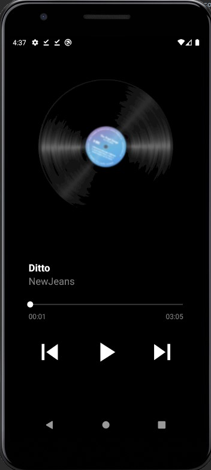
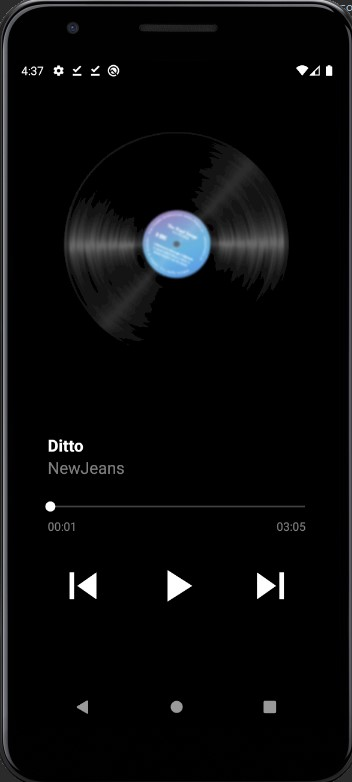
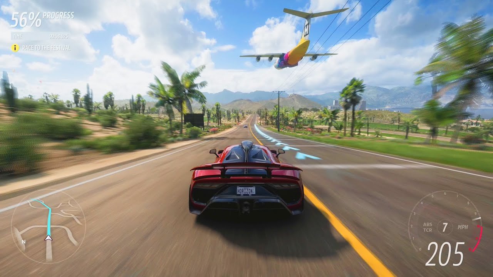
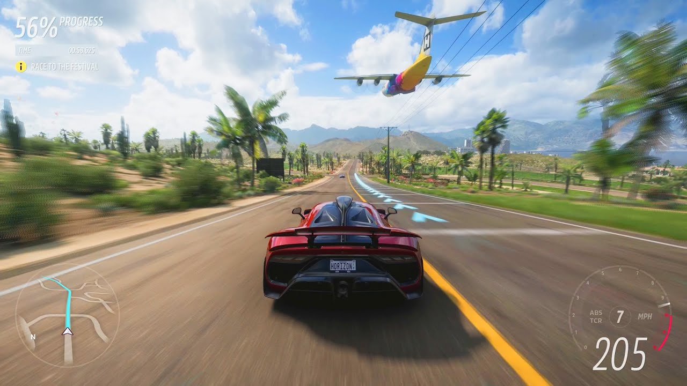

My name is Song Xen Hwa, and a Computer Science graduate. I do and enjoy designing, coding & developing.
Recent gradute from Monash Univeristy Clayton with a bachelor's degree in Computer Science specialising advanced computer science. I am familiar with various programming languages particularly Python & Java. I love to channel my creativity in developing & designing applications
I was a frequent volunteer throughout my university period. I promoted & shared the wonders & joy university life to the students. Volnteered as a graduation ambassador and guide famillies and guests around the venue to ensure event success.


 



 
